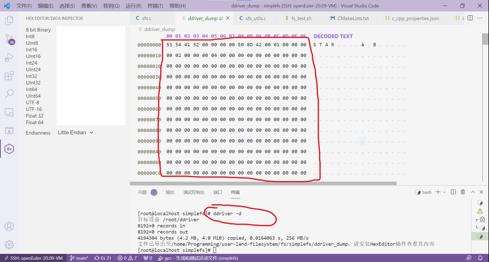

实验提示¶
1. 如何调试？¶
按下F5后，文件系统运行为前台模式，那么如何输入命令呢？事实上，可以ctrl + shift +｀呼出另一个终端，然后在另一个终端操作。

另外，如下图所示，可以按这个 拆分键 ，就可以同时显示两个终端了。

2. 挂载失败？¶
提示"fuse: bad mount point" 如下图所示：

这种情况就是不正常的卸载文件系统，我们显式地调用 卸载文件系统 即可：
teststu_8@OSLabExecNode0:~/pyq/user-land-filesystem/fs/newfs$ fusermount -u ./tests/mnt
teststu_8@OSLabExecNode0:~/pyq/user-land-filesystem/fs/newfs$
3. 挂载点不空？¶
提示"mountpoint is not empty" 如下图所示：

这种情况就是在测试的时候，不小心给mnt文件夹下创建了一个文件，导致错误发生，把 文件删除 就行。
4. 如何解读EXT2文件系统布局？¶
可以查看dump文件系统镜像，对镜像进行解读：

利用 ddriver -d 生成ddriver镜像命令查看镜像。
以simplefs镜像为例：
~/user-land-filesystem/fs/simplefs$ ddriver -d
[sudo] password for test_19:
目标设备 /home/students/test_19/ddriver
8192+0 records in
8192+0 records out
4194304 bytes (4.2 MB, 4.0 MiB) copied, 0.0632482 s, 66.3 MB/s
文件已导出至/home/students/test_19/user-land-filesystem/fs/simplefs/ddriver_dump，请安装HexEditor插件查看其内容
在VSCode上安装HexEditor插件，即可查看ddriver_dump镜像的内容。
5. 实验评测中的位图检查原理¶
为避免大家照搬Simple File System代码，实验评测脚本./tests/checkbm/check_bm.py会根据大家填写的fs.layout文件，确定ddriver磁盘布局，检查super、inode_map、data_map各项内容，如果检查失败，check_bm.py会返回相应的错误，大家依错自行查改即可。
具体检查原理可以查看：https://gitee.com/ftutorials/user-land-filesystem/blob/main/fs/template/tests/checkbm/README.md